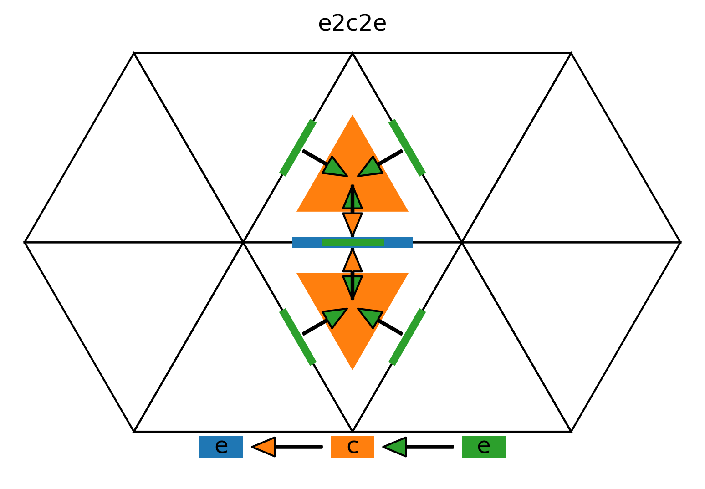
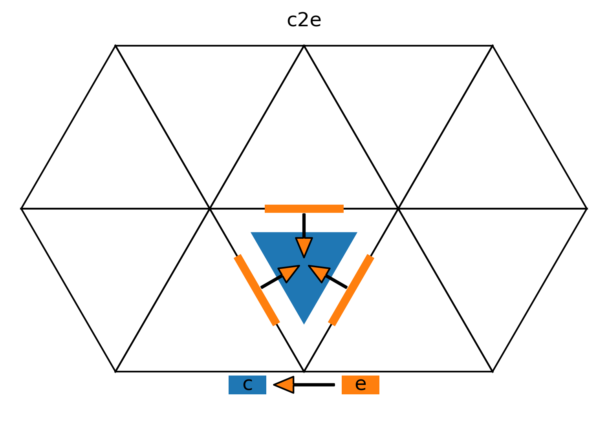
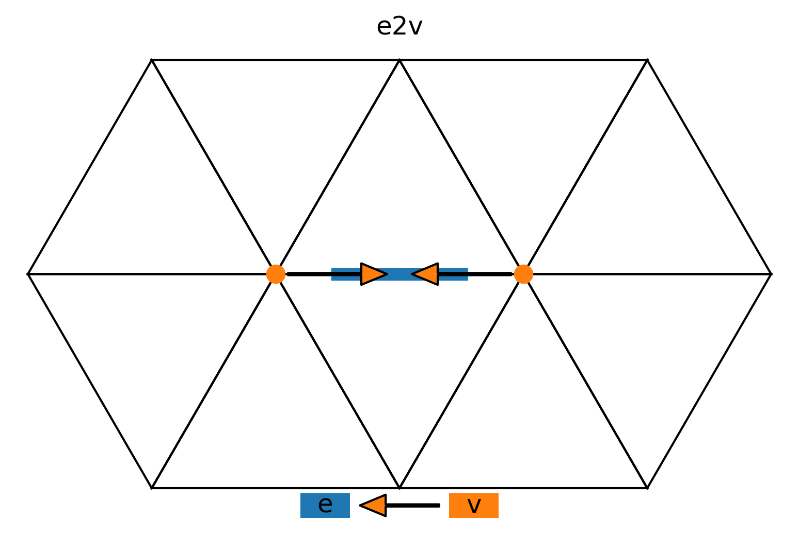
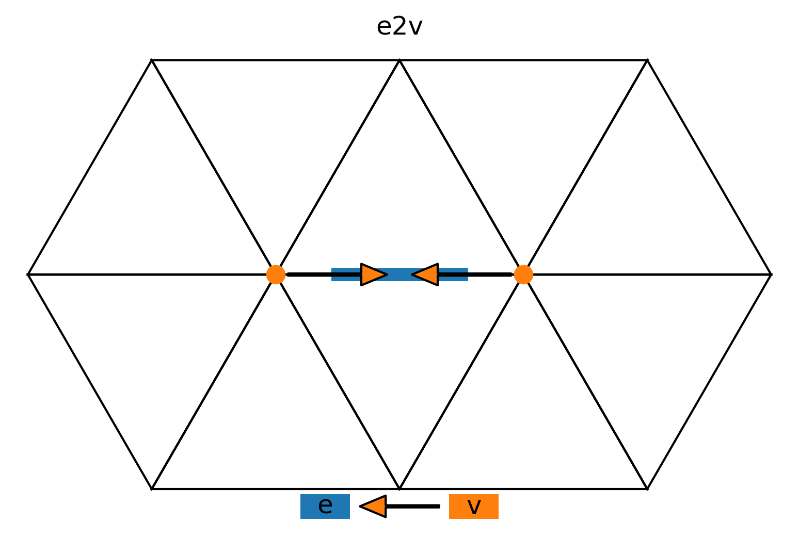

Dycore numerical documentation (velocity advection)
This page documents the advection part of the dycore.
- VelocityAdvection.run_predictor_step(vn_only: bool, diagnostic_state: ~icon4py.model.atmosphere.dycore.dycore_states.DiagnosticStateNonHydro, prognostic_state: ~icon4py.model.common.states.prognostic_state.PrognosticState, z_w_concorr_me: ~gt4py.next.common.Field[~gt4py.next.common.Dims[Dimension(value='Edge', kind=<DimensionKind.HORIZONTAL: 'horizontal'>), Dimension(value='K', kind=<DimensionKind.VERTICAL: 'vertical'>)], float], z_kin_hor_e: ~gt4py.next.common.Field[~gt4py.next.common.Dims[Dimension(value='Edge', kind=<DimensionKind.HORIZONTAL: 'horizontal'>), Dimension(value='K', kind=<DimensionKind.VERTICAL: 'vertical'>)], float], z_vt_ie: ~gt4py.next.common.Field[~gt4py.next.common.Dims[Dimension(value='Edge', kind=<DimensionKind.HORIZONTAL: 'horizontal'>), Dimension(value='K', kind=<DimensionKind.VERTICAL: 'vertical'>)], float], dtime: float, cell_areas: ~gt4py.next.common.Field[~gt4py.next.common.Dims[Dimension(value='Cell', kind=<DimensionKind.HORIZONTAL: 'horizontal'>)], float])
self._mo_math_divrot_rot_vertex_ri_dsl- Outputs
- \(\color{grey}{\scriptstyle{\texttt{self.}}}\)zeta:
Field[Dims[Vertex, K], float64] - \[ \vortvert{\n}{\v}{\k} = \sum_{\offProv{v2e}} \Crot \vn{\n}{\e}{\k} \]Compute the vorticity on vertices using the discrete Stokes theorem (eq. 5 in Bonaventura_and_Ringler_2005).
- \(\color{grey}{\scriptstyle{\texttt{self.}}}\)zeta:
Inputs
\(\Crot\) \(\rightarrow\) \(\color{grey}{\scriptstyle{\texttt{self.interpolation_state.}}}\)geofac_rot:
Field[Dims[Vertex, V2E], float64]\(\vn{\n}{\e}{\k}\) \(\rightarrow\) \(\color{grey}{\scriptstyle{\texttt{prognostic_state.}}}\)vn:
Field[Dims[Edge, K], float64]
Offset providers

Source code
self._mo_math_divrot_rot_vertex_ri_dsl( vec_e=prognostic_state.vn, geofac_rot=self.interpolation_state.geofac_rot, rot_vec=self.zeta, horizontal_start=self._start_vertex_lateral_boundary_level_2, horizontal_end=self._end_vertex_halo, vertical_start=0, vertical_end=self.grid.num_levels, offset_provider=self.grid.offset_providers, )
self._compute_tangential_wind- Outputs
- \(\color{grey}{\scriptstyle{\texttt{diagnostic_state.}}}\)vt:
Field[Dims[Edge, K], float64] - \[ \vt{\n}{\e}{\k} = \sum_{\offProv{e2c2e}} \Wrbf\,\vn{\n}{\e}{\k} \]Compute the tangential velocity by RBF interpolation from four neighboring edges (diamond shape) projected along the tangential direction.
- \(\color{grey}{\scriptstyle{\texttt{diagnostic_state.}}}\)vt:
Inputs
\(\Wrbf\) \(\rightarrow\) \(\color{grey}{\scriptstyle{\texttt{self.interpolation_state.}}}\)rbf_vec_coeff_e:
Field[Dims[Edge, E2C2E], float64]\(\vn{\n}{\e}{\k}\) \(\rightarrow\) \(\color{grey}{\scriptstyle{\texttt{prognostic_state.}}}\)vn:
Field[Dims[Edge, K], float64]
Offset providers
Source code
self._compute_tangential_wind( vn=prognostic_state.vn, rbf_vec_coeff_e=self.interpolation_state.rbf_vec_coeff_e, vt=diagnostic_state.vt, horizontal_start=self._start_edge_lateral_boundary_level_5, horizontal_end=self._end_edge_halo_level_2, vertical_start=0, vertical_end=self.grid.num_levels, offset_provider=self.grid.offset_providers, )
self._interpolate_vn_to_ie_and_compute_ekin_on_edges- Outputs
- \(\color{grey}{\scriptstyle{\texttt{diagnostic_state.}}}\)vn_ie:
Field[Dims[Edge, K], float64] - \[ \vn{\n}{\e}{\k-1/2} = \Wlev\,\vn{\n}{\e}{\k} + (1 - \Wlev) \vn{\n}{\e}{\k-1}, \quad \k \in [1, \nlev) \]Interpolate the normal velocity from full to half levels.
- \(\color{grey}{\scriptstyle{\texttt{diagnostic_state.}}}\)vn_ie:
- z_kin_hor_e:
Field[Dims[Edge, K], float64] - \[ \kinehori{\n}{\e}{\k} = \frac{1}{2} \left( \vn{\n}{\e}{\k}^2 + \vt{\n}{\e}{\k}^2 \right), \quad \k \in [1, \nlev) \]Compute the horizontal kinetic energy. Exclude the first full level.
- z_kin_hor_e:
Inputs
\(\Wlev\) \(\rightarrow\) \(\color{grey}{\scriptstyle{\texttt{self.metric_state.}}}\)wgtfac_e:
Field[Dims[Edge, K], float64]\(\vn{\n}{\e}{\k}\) \(\rightarrow\) \(\color{grey}{\scriptstyle{\texttt{prognostic_state.}}}\)vn:
Field[Dims[Edge, K], float64]\(\vt{\n}{\e}{\k}\) \(\rightarrow\) \(\color{grey}{\scriptstyle{\texttt{diagnostic_state.}}}\)vt:
Field[Dims[Edge, K], float64]
Source code
self._interpolate_vn_to_ie_and_compute_ekin_on_edges( wgtfac_e=self.metric_state.wgtfac_e, vn=prognostic_state.vn, vt=diagnostic_state.vt, vn_ie=diagnostic_state.vn_ie, z_kin_hor_e=z_kin_hor_e, horizontal_start=self._start_edge_lateral_boundary_level_5, horizontal_end=self._end_edge_halo_level_2, vertical_start=1, vertical_end=self.grid.num_levels, offset_provider=self.grid.offset_providers, )
self._fused_stencils_4_5- Outputs
- z_w_concorr_me:
Field[Dims[Edge, K], float] - \[ \wcc{\n}{\e}{\k} = \vn{\n}{\e}{\k} \pdxn{z} + \vt{\n}{\e}{\k} \pdxt{z}, \quad \k \in [\nflatlev, \nlev) \]Compute the contravariant correction to the vertical wind due to terrain-following coordinate. \(\pdxn{}\) and \(\pdxt{}\) are the horizontal derivatives along the normal and tangent directions respectively (eq. 17 in Zangl_etal_2015).
- z_w_concorr_me:
- \(\color{grey}{\scriptstyle{\texttt{diagnostic_state.}}}\)vn_ie:
Field[Dims[Edge, K], float] - \[ \vn{\n}{\e}{-1/2} = \vn{\n}{\e}{0} \]Set the normal wind at model top equal to the normal wind at the first full level.
- \(\color{grey}{\scriptstyle{\texttt{diagnostic_state.}}}\)vn_ie:
- z_vt_ie:
Field[Dims[Edge, K], float] - \[ \vt{\n}{\e}{-1/2} = \vt{\n}{\e}{0} \]Set the tangential wind at model top equal to the tangential wind at the first full level.
- z_vt_ie:
- z_kin_hor_e:
Field[Dims[Edge, K], float] - \[ \kinehori{\n}{\e}{0} = \frac{1}{2} \left( \vn{\n}{\e}{0}^2 + \vt{\n}{\e}{0}^2 \right) \]Compute the horizontal kinetic energy on the first full level.
- z_kin_hor_e:
Inputs
\(\vn{\n}{\e}{\k}\) \(\rightarrow\) \(\color{grey}{\scriptstyle{\texttt{prognostic_state.}}}\)vn:
Field[Dims[Edge, K], float]\(\vt{\n}{\e}{\k}\) \(\rightarrow\) \(\color{grey}{\scriptstyle{\texttt{diagnostic_state.}}}\)vt:
Field[Dims[Edge, K], float]\(\pdxn{z}\) \(\rightarrow\) \(\color{grey}{\scriptstyle{\texttt{self.metric_state.}}}\)ddxn_z_full:
Field[Dims[Edge, K], float]\(\pdxt{z}\) \(\rightarrow\) \(\color{grey}{\scriptstyle{\texttt{self.metric_state.}}}\)ddxt_z_full:
Field[Dims[Edge, K], float]
Source code
self._fused_stencils_4_5( vn=prognostic_state.vn, vt=diagnostic_state.vt, vn_ie=diagnostic_state.vn_ie, z_vt_ie=z_vt_ie, z_kin_hor_e=z_kin_hor_e, ddxn_z_full=self.metric_state.ddxn_z_full, ddxt_z_full=self.metric_state.ddxt_z_full, z_w_concorr_me=z_w_concorr_me, k_field=self.k_field, nflatlev_startindex=self.vertical_params.nflatlev, nlev=self.grid.num_levels, horizontal_start=self._start_edge_lateral_boundary_level_5, horizontal_end=self._end_edge_halo_level_2, vertical_start=0, vertical_end=self.grid.num_levels, offset_provider={}, )
self._interpolate_to_cell_center- Outputs
- \(\color{grey}{\scriptstyle{\texttt{self.}}}\)z_ekinh:
Field[Dims[Cell, K], float64] - \[ \kinehori{\n}{\c}{\k} = \sum_{\offProv{c2e}} \Whor \kinehori{\n}{\e}{\k} \]Interpolate the horizonal kinetic energy from edge to cell center.
- \(\color{grey}{\scriptstyle{\texttt{self.}}}\)z_ekinh:
Inputs
\(\Whor\) \(\rightarrow\) \(\color{grey}{\scriptstyle{\texttt{self.interpolation_state.}}}\)e_bln_c_s:
Field[Dims[CE], float64]\(\kinehori{\n}{\e}{\k}\) \(\rightarrow\) z_kin_hor_e:
Field[Dims[Edge, K], float64]
Offset providers
Source code
self._interpolate_to_cell_center( interpolant=z_kin_hor_e, e_bln_c_s=self.interpolation_state.e_bln_c_s, interpolation=self.z_ekinh, horizontal_start=self._start_cell_lateral_boundary_level_4, horizontal_end=self._end_cell_halo, vertical_start=0, vertical_end=self.grid.num_levels, offset_provider=self.grid.offset_providers, )
self._fused_stencils_9_10- Outputs
- \(\color{grey}{\scriptstyle{\texttt{self.}}}\)z_w_concorr_mc:
Field[Dims[Cell, K], float] - \[ \wcc{\n}{\c}{\k} = \sum_{\offProv{c2e}} \Whor \wcc{\n}{\e}{\k} \]Interpolate the contravariant correction from edge to cell center.
- \(\color{grey}{\scriptstyle{\texttt{self.}}}\)z_w_concorr_mc:
- \(\color{grey}{\scriptstyle{\texttt{diagnostic_state.}}}\)w_concorr_c:
Field[Dims[Cell, K], float] - \[ \wcc{\n}{\c}{\k-1/2} = \Wlev\,\wcc{\n}{\c}{\k} + (1 - \Wlev) \wcc{\n}{\c}{\k-1}, \quad \k \in [\nflatlev+1, \nlev) \]Interpolate the contravariant correction from full to half levels.
- \(\color{grey}{\scriptstyle{\texttt{diagnostic_state.}}}\)w_concorr_c:
Inputs
\(\wcc{\n}{\e}{\k}\) \(\rightarrow\) z_w_concorr_me:
Field[Dims[Edge, K], float]\(\Whor\) \(\rightarrow\) \(\color{grey}{\scriptstyle{\texttt{self.interpolation_state.}}}\)e_bln_c_s:
Field[Dims[CE], float]\(\Wlev\) \(\rightarrow\) \(\color{grey}{\scriptstyle{\texttt{self.metric_state.}}}\)wgtfac_c:
Field[Dims[Cell, K], float]
Offset providers
Source code
self._fused_stencils_9_10( z_w_concorr_me=z_w_concorr_me, e_bln_c_s=self.interpolation_state.e_bln_c_s, local_z_w_concorr_mc=self.z_w_concorr_mc, wgtfac_c=self.metric_state.wgtfac_c, w_concorr_c=diagnostic_state.w_concorr_c, k_field=self.k_field, nflatlev_startindex=self.vertical_params.nflatlev, nlev=self.grid.num_levels, horizontal_start=self._start_cell_lateral_boundary_level_4, horizontal_end=self._end_cell_halo, vertical_start=0, vertical_end=self.grid.num_levels, offset_provider=self.grid.offset_providers, )
self._fused_stencils_11_to_13- Outputs
- \(\color{grey}{\scriptstyle{\texttt{self.}}}\)z_w_con_c:
Field[Dims[Cell, K], float] - \[\begin{split} (\w{\n}{\c}{\k-1/2} - \wcc{\n}{\c}{\k-1/2}) = \begin{cases} & \w{\n}{\c}{\k-1/2}, & \k \in [0, \nflatlev+1) \\[3pt] & \w{\n}{\c}{\k-1/2} - \wcc{\n}{\c}{\k-1/2}, & \k \in [\nflatlev+1, \nlev) \\[3pt] & 0, & \k = \nlev \end{cases} \end{split}\]Subtract the contravariant correction \(\wcc{}{}{}\) from the vertical wind \(\w{}{}{}\) in the terrain-following levels. This is done for convevnience here, instead of directly in the advection tendency update, because the result needs to be interpolated to edge centers and full levels for later use. The papers do not use a new symbol for this variable, and the code ambiguosly mixes the variable names used for \(\wcc{}{}{}\) and \((\w{}{}{} - \wcc{}{}{})\).
- \(\color{grey}{\scriptstyle{\texttt{self.}}}\)z_w_con_c:
Inputs
\(\w{\n}{\c}{\k\pm1/2}\) \(\rightarrow\) \(\color{grey}{\scriptstyle{\texttt{prognostic_state.}}}\)w:
Field[Dims[Cell, K], float]\(\wcc{\n}{\c}{\k\pm1/2}\) \(\rightarrow\) \(\color{grey}{\scriptstyle{\texttt{diagnostic_state.}}}\)w_concorr_c:
Field[Dims[Cell, K], float]
Source code
self._fused_stencils_11_to_13( w=prognostic_state.w, w_concorr_c=diagnostic_state.w_concorr_c, local_z_w_con_c=self.z_w_con_c, k_field=self.k_field, nflatlev_startindex=self.vertical_params.nflatlev, nlev=self.grid.num_levels, horizontal_start=self._start_cell_lateral_boundary_level_4, horizontal_end=self._end_cell_halo, vertical_start=0, vertical_end=self.grid.num_levels + 1, offset_provider={}, )
self._interpolate_contravariant_vertical_velocity_to_full_levels- Outputs
- \(\color{grey}{\scriptstyle{\texttt{self.}}}\)z_w_con_c_full:
Field[Dims[Cell, K], float64] - \[ (\w{\n}{\c}{\k} - \wcc{\n}{\c}{\k}) = \frac{1}{2} [ (\w{\n}{\c}{\k-1/2} - \wcc{\n}{\c}{\k-1/2}) + (\w{\n}{\c}{\k+1/2} - \wcc{\n}{\c}{\k+1/2}) ] \]Interpolate the vertical wind with contravariant correction from half to full levels.
- \(\color{grey}{\scriptstyle{\texttt{self.}}}\)z_w_con_c_full:
Inputs
\((\w{\n}{\c}{\k\pm1/2} - \wcc{\n}{\c}{\k\pm1/2})\) \(\rightarrow\) \(\color{grey}{\scriptstyle{\texttt{self.}}}\)z_w_con_c:
Field[Dims[Cell, K], float64]
Source code
self._interpolate_contravariant_vertical_velocity_to_full_levels( z_w_con_c=self.z_w_con_c, z_w_con_c_full=self.z_w_con_c_full, horizontal_start=self._start_cell_lateral_boundary_level_4, horizontal_end=self._end_cell_halo, vertical_start=0, vertical_end=self.grid.num_levels, offset_provider=self.grid.offset_providers, )
self._compute_advective_normal_wind_tendency- Outputs
- ddt_vn_apc_pc[ntnd]
- \[\begin{split} & \advvn{\n}{\e}{\k} &&= \pdxn{\kinehori{}{}{}} + \vt{}{}{} (\vortvert{}{}{} + \coriolis{}) + \pdz{\vn{}{}{}} (\w{}{}{} - \wcc{}{}{}) \\[3pt] & &&= \Gradn_{\offProv{e2c}} \Cgrad \kinehori{\n}{c}{\k} + \kinehori{\n}{\e}{\k} \Gradn_{\offProv{e2c}} \Cgrad \\[3pt] & &&+ \vt{\n}{\e}{\k} (\coriolis{\e} + 1/2 \sum_{\offProv{e2v}} \vortvert{\n}{\v}{\k}) \\[3pt] & &&+ \frac{\vn{\n}{\e}{\k-1/2} - \vn{\n}{\e}{\k+1/2}}{\Dz{k}} \sum_{\offProv{e2c}} \Whor (\w{\n}{\c}{\k} - \wcc{\n}{\c}{\k}) \end{split}\]Compute the advective tendency of the normal wind (eq. 13 in Zangl_etal_2015). The edge-normal derivative of the kinetic energy is computed by combining the first order approximation across adiacent cell centres (eq. 7 in Bonaventura_and_Ringler_2005) with the edge value of the kinetic energy (TODO: this needs explaining and a reference).
Inputs
\(\Cgrad\) \(\rightarrow\) \(\color{grey}{\scriptstyle{\texttt{self.metric_state.}}}\)coeff_gradekin:
Field[Dims[EC], float64]\(\kinehori{\n}{\e}{\k}\) \(\rightarrow\) z_kin_hor_e:
Field[Dims[Edge, K], float64]\(\kinehori{\n}{\c}{\k}\) \(\rightarrow\) \(\color{grey}{\scriptstyle{\texttt{self.}}}\)z_ekinh:
Field[Dims[Cell, K], float64]\(\vt{\n}{\e}{\k}\) \(\rightarrow\) \(\color{grey}{\scriptstyle{\texttt{diagnostic_state.}}}\)vt:
Field[Dims[Edge, K], float64]\(\coriolis{\e}\) \(\rightarrow\) \(\color{grey}{\scriptstyle{\texttt{self.edge_params.}}}\)f_e:
Field[Dims[Edge], float64]\(\vortvert{\n}{\v}{\k}\) \(\rightarrow\) \(\color{grey}{\scriptstyle{\texttt{self.}}}\)zeta:
Field[Dims[Vertex, K], float64]\(\Whor\) \(\rightarrow\) \(\color{grey}{\scriptstyle{\texttt{self.interpolation_state.}}}\)c_lin_e:
Field[Dims[Edge, E2C], float64]\((\w{\n}{\c}{\k} - \wcc{\n}{\c}{\k})\) \(\rightarrow\) \(\color{grey}{\scriptstyle{\texttt{self.}}}\)z_w_con_c_full:
Field[Dims[Cell, K], float64]\(\vn{\n}{\e}{\k\pm1/2}\) \(\rightarrow\) \(\color{grey}{\scriptstyle{\texttt{diagnostic_state.}}}\)vn_ie:
Field[Dims[Edge, K], float64]\(\Dz{\k}\) \(\rightarrow\) \(\color{grey}{\scriptstyle{\texttt{self.metric_state.}}}\)ddqz_z_full_e:
Field[Dims[Edge, K], float64]
Offset providers
 

Source code
self._compute_advective_normal_wind_tendency( z_kin_hor_e=z_kin_hor_e, coeff_gradekin=self.metric_state.coeff_gradekin, z_ekinh=self.z_ekinh, zeta=self.zeta, vt=diagnostic_state.vt, f_e=self.edge_params.f_e, c_lin_e=self.interpolation_state.c_lin_e, z_w_con_c_full=self.z_w_con_c_full, vn_ie=diagnostic_state.vn_ie, ddqz_z_full_e=self.metric_state.ddqz_z_full_e, ddt_vn_apc=diagnostic_state.ddt_vn_apc_pc.predictor, horizontal_start=self._start_edge_nudging_level_2, horizontal_end=self._end_edge_local, vertical_start=0, vertical_end=self.grid.num_levels, offset_provider=self.grid.offset_providers, )